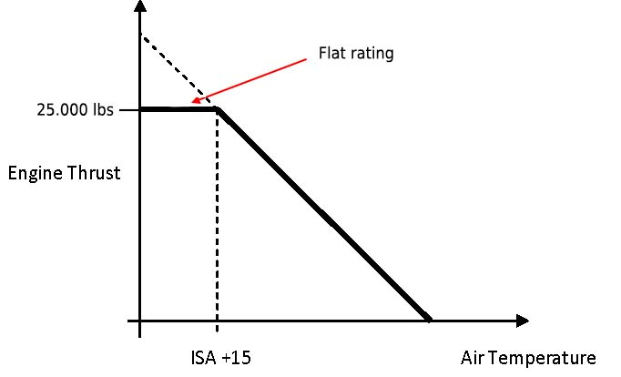

1. Introduction
WORKING PRINCIPLES
· Basic principle
- Newton's third law: If an object A exerts a force on object B, then object B must exert a force of equal magnitude and opposite direction back on object A.
- Applicability to turbine engines: if an engine pushes air backwards, then the air must be exerting an equal force pushing the engine forward.
· Force (thrust) = mass x acceleration
- Engine thrust augmentation can be achieved by either increasing either the mass flow or the speed at which gases are propelled from the engine.
- Old engines used to accelerate a small amount of air to a very high speed
- Modern engines tend to increase the mass flow in order to increase thrust, expelling it not so fast
TURBINE ENGINE DESIGN
· Components
|

· Bypassed air
| Image source: aviation.stackexchange.com |
· Engine spools
| Image source: thaitecnics.com |
· Useful acronyms
- BPR = Bypass ratio
- EPR = Engine pressure ratio (pressure measured at exhaust / pressure measured at intake)
- EGT = Exhaust gas temperature
- CPR = Compressor pressure ratio (pressure after compressors / pressure before compressors)
TURBINE ENGINE CYCLE
· Phases of the Brayton Cycle
- Induction. Slightly divergent duct causing a small pressure increase and velocity decrease.
- Compression. Pressure and temperature increase. Velocity is kept pretty much constant.
- Combustion. Velocity is reduced at the beginning, and increased at the end. Pressure is constant. Temperature increases.
- Expansion. Pressure and temperature decrease
- Exhaust. Pressure and temperature decrease, velocity increases
· Principles of the ideal Brayton Cycle.
- Principle: combustion occurs at constant pressure
- Usage of low-octane fuel
- Relatively light construction methods
- Opposite to internal combustion engines, the Brayton Cycle is a continuous process.
· Heat energy is converted to mechanical and kinetic energy
- Mechanical engine turns the turbine, which is linked to the compressor.
- Gases are accelerated thanks to heat energy, creating thrust
- Energy limit is generally imposed by temperature limitations of the materials of the engine
TURBINE ENGINE TYPES
· Pure Turbo-Jet
|

{kind=link}
{kind=link}
· Turbo-props
| Image source: wikipedia.org |
· Turbo-shafts
| Image source: researchgate.net |
· Bypass engines
| Turbofan engineImage source: 12charlie.com |
2. Air Intake
INTRODUCTION
· Function of the engine-air intake
- Deliver a correct and uniform airflow to the compressor, avoiding compressor stall.
- Offer low aerodynamic resistance
TYPICAL INLET DESIGN
· Subsonic inlets
| Image source: dutchops.com |
· Blow-in-doors
| Image source: wikimedia.org |
{kind=link}
RAM EFFECT
· Ram effect
- The thrust of an engine is¬† ùëá = ùëÑ (ùëâùëúùë¢ùë°‚àíùëâùëñùëõ)
- At high thrust settings, ùëâùëúùë¢ùë° is fixed at the speed of sound.
- As the aircraft accelerates, speed differencial is reduced and generated thrust should be reduced accordingly.
- However, above M 0.2, the engine inlet begins to increase pressure of the air.
- That means that the density of air in the inlet increases.
- As density increases, and if we assume constant RPM (and thus volume) the mass of the air flowing through the engine increases.
- At some point the increased mass flow ùëÑ has compensated the loss of velocity change in the engine and thrust has reached its stationary engine value. This is the ram recovery point.
- During cruise, pressure in the intake duct is higher than the atmospheric pressure. This pressure gradient eases airflow into the compressor.
THREATS & ABNORMALITIES
· Icing
- Suction created by the engine, specially at low airspeeds and high power settings, reduces static pressure of the air, and, thus, reduces its temperature.
- If air is humid, it can cool down enough so that ice begins to form at the inlet duct.
- Jet engines are provided with anti-ice systems reduced to prevent and stop the formation of ice.
· Air-flow disruption
- Crosswinds and turbulent air may lead to deviation of relative wind beyond design limits
- For this reason, engines have a maximum crosswind limitation for take-off
3. Compressor
INTRODUCTION
· Purpose of the compressor
- Primary purpose is to increase the pressure of the air to provide conditions favorable for combustion and expansion of the hot gases.
- Also has secondary functions such as providing bleed air at adequate pressure and temperature for other consumers (cabin air conditioning and pressurization, reservoir pressurization, anti-ice systems, etc)
TYPES OF COMPRESSORS
| Centrifugal Compressors | · Principle
· Advantages
· Disadvantages
| |
| Axial Compressors | · Principle
· Components
· Advantages
· Disadvantages
|
BLADE DESIGN
· Blade twist (Stagger angle)
- Because rotor blades are spinning, the blade tips move faster through the air than sections close to blade hubs (angular velocity is greater at the tips)
- Blade angle of attack is a result of forward velocity, angular velocity and blade angle
- In order to maintain a constant and optimum angle of attack throughout the whole blade, they have to be twisted, similar to the twist of a propeller.
· Blade angle
- Stator blades can be adjusted to maintain optimum angle of attack at a wide range of operation conditions
· Blade attachment
|
· Blade tip clearance
- Blade tip clearance is critical to engine efficiency.
- Too much clearance causes internal leakages, performance and efficiency loss
- Insufficient clearance causes damage, blade failure, fatigue, housing distortion and even titanium fires.
- Liner is used on the engine casing to provide a space where the blades perfectly fit.
ENGINE FAN
· Fan blade design and materials
- Airfoil section.
- Made of titanium or carbon fiber using honeycomb sandwich structure for stiffness.
AERODYNAMICS & MALFUNCTIONS
· Compressor aerodynamics
- The velocity of the air in relation to the stators is known as absolute velocity
- The velocity of the air in relation to the rotating blades is known as relative velocity
- It's the sum of the absolute velocity of the air and rotational speed of the blades.
- It determines the blade's angle of attack
· Compressor stall
- Circumstance of abnormal airflow, resulting from the aerodynamic stall of the compressor blades
- Occurs when the blades' AoA is too high
- Can also be referred to:
- As a "local" disruption of the airflow through the compressor
- As an imbalance between engine's rotational speed and axial velocity
- Ultimately, it can lead to a compressor surge.
- Possible causes:
- Abrupt engine accelerations or decelerations
- Turbulent airflow being intaken
- Contaminated or damaged compressor
- Operation of the aircraft outside its envelope
- Electronic faults
- Indicated by fluctuating RPM, vibrations and an abrupt increase in EGT
· Compressor surge
- It's a complete breakdown of airflow through the compressor
- Can also be referered to as a "complete" disruption of the airflow through the compressor
- Can be caused by:
- Engine stall
- A very steep adverse pressure gradient, impeding normal airflow
- Indications:
- Reversal of the gases in the engine
- Loss of thrust, and associated yaw
- EGT increase
- Engine flame-out
- Loud noise
- High vibrations
- If surge occurs, slowly idle the thrust and shut the engine down
AIR FLOW CONTROL
· Variable Inlet Guide Vanes (VIGV)
- Fitted in front of the first rotor stage
- VIGVs reduce the swirl imparted to the airflow, ensuring that airflow reaches compressor at correct angle of attack.
- VIGVs enhance engine performance and prevent compressor stall.
· Variable Stator Vanes (VSV)
- Similar to VIGVs, but located after first rotor stage
· Variable Bypass Vanes (VBV)
- They bleed excess air into the bypass duct
- Excess air is, therefore, still used to create some thrust
- Maximizes engine efficiency and slightly improves fuel consumption
· Multi-spool compressors
- Allows different speeds for low, (medium, if fitted) and high pressure stages
PERFORMANCE DEGRADATION AND RECOVERY
· Performance degradation
- Intake of small particles such as dust or sand can reduce the performance of the engine.
- Recovery can be achieved through a "core wash procedure" that removes contamination from the compressor.
4. Combustion Chamber
INTRODUCTION
· Purpose
- Contain the burning mixture of air fuel
- Should ideally provide:
- High combustion efficiency and stability
- Low fuel consumption and emissions
- An adequate stream of gases for the turbine
- Good engine start / ignition / relight capabilities
- High durability
· Usually, temperature requirements of the gases leaving the combustion chamber is the limiting factor when designing new models.
- Air in the combustion chamber can reach up to 2100ºC
- However, it must leave the combustion chamber at 1000 - 1500 ºC
· Pressure must be held constant during the combustion to ensure that no adverse pressure gradient exists, protecting the compressor and the whole engine.
BASIC DESIGN AND PRINCIPLES
· Air must be slowed down to account for the fuel flame rate. This is achieved by:
| Source: researchgate.net |
· Fuel can be supplied by either
- Fuel spray nozzles (air spray or pressure jet injectors)
- Simplex nozzles have a single orifice, and can either be primary or secondary.
- Duplex nozzle have two passages , one for primary and another for secondary fuel metering.
- Anti-carbon nozzles are designed so that airflow removes carbon deposits and improves the spraying characteristics
- The more pressure applied to these nozzles, the more widespread that the fuel is injected
- Fuel vaporizers
· Power changes are achieved by changing the amount of fuel entering the chamber.
AIRFLOWS INSIDE THE COMBUSTION CHAMBER
· Hot stream is divided into primary, secondary and tertiary airflow.
| Primary airflow | Secondary airflow | Tertiary airflow |
| About 20% of the airflow Air is swirled and recirculated, mixed with the fuel and burnt Mixture of 15:1 (stoichiometric) | About 30% of the airflow Injected into the combustion chamber after the ignition via slots and holes Provides cooling, stabilizes and anchors the flame Dilutes the mixture to 45:1 | Remaining part of the airflow Enters the combustion chamber in the dilution zone Cools down the gases before the turbine and the casing Dilutes the mixture to 130:1 |
TYPES OF COMBUSTION CHAMBERS
· Types of combustion chambers
- Multiple can type
- Can-annular type (interconnected cans)
- Annular type
- Straight flow type
- Reverse flow type
· Multiple can type
| Source: Rolls Royce |
· Can-annular or cannular type
| Source: Rolls Royce |
· Annular - Straight flow
| Source: Rolls Royce |
· Reverse-annular flow
| Source: sto.nato.int |
TERMINOLOGY
· Combustion stability
- Stability means smooth burning and the ability to remain alight over a large range of air/fuel ratios and mass flows
· Combustion efficiency
- It's the ability to extract the potential heat actually contained in the fuel.
MALFUNCTIONS
· Wet start:
- A startup malfunction characterized by fuel flowing to the engines but no EGT or RPM indications change.
- Essentially, it means that the fuel is not being ignited.
- Suspect igniter fault and contact maintenance.
- Unburnt fuel must be drained before another start attempt to prevent a hot start. This is achieved by spring loaded drain valves which are held shut by the pressure of the combustion
· Torching (can happen after wet start)
|
5. Turbine
INTRODUCTION
· Purpose of the turbine
- Turbines convert pressure and temperature energy into mechanical energy.
- This mechanical energy drives the engine's compressor.
TURBINE DESIGN
- A turbine stage is a stator followed by a rotor
- Stators convert pressure energy to kinetic energy, and direct airflow
- Rotors convert kinetic to mechanical energy
- The entire module forms a divergent duct.
- The nozzle guide vanes direct the gas into the turbine blades, where rotation can be generated by impulse or reaction.
IMPULSE, REACTION AND IMPULSE-REACTION TURBINES
· Impulse turbines
- Stators are convergent. Pressure and temperature decrease, velocity increase.
- Rotors have parallel ducts. Pressure and temperature unchanged, velocity decreased because it’s converted into rotation of the rotor.
· Reaction turbines
- Stators are parallel. Pressure, temperature and velocity unchanged.
- Rotors are convergent. Pressure and temperature decreased, velocity decreases as well because it’s converted into rotation.
· Impulse-reaction
- Blade roots are impulse type, whereas blade tips are reaction type.
BLADE FITTING
· Blade installation
- Fir tree fixing usually used
- Blades are slightly flexible
- Blade shroud (external ring) minimizes losses due to leakage and reduces vibration
· Active clearance control
- Turbine casing automatically expands or contracts, allowing for expansion or contraction of the turbine blades due to temperature.
STRESS AND FATIGUE
· Blades Stress and Fatigue
- High temperatures and vibration can cause deformation
- Creep is the permanent elongation of the material due to centrifugal stress and high temperatures that the turbine sustains
- Blade maintenance is based on a safe life cycle
- In fact, turbine temperature is the limiting factor when trying to increase engine thrust limitation
· Blade stress types
- High cycle fatigue. High frequency (low amplitude) strains
- Low cycle fatigue. Low frequency (high amplitude) strains.
· Blade materials
- Steel, nickel-based super alloys or ceramics
TURBINE COOLING
· Internal blade cooling
- Convection cooling
- Air at a lower temperature than the turbine is passed through passages inside the blade.
- Heat is transferred via conduction and then through convection from blade material to the air
- Air from the last stage of the HP Compressor is used to prevent thermal shock
- Alternatively, it could use a liquid system
- Impingement cooling
- Involves hitting the inner surfaces of the blade with high-velocity air
- Also uses a system of holes
· Film cooling
- It's the main strategy nowadays
- "Cold" air is bled from the compressor, channeled to internal ducts of the engine blades, and discharged through small holes in the blades forming cooling jets
- This creates a thin layer of cold air that reduces heat transfer to the blades surface
6. Exhaust System
PRINCIPLE
· The exhaust system accelerates the exhaust gases to maximize thrust
- Other functions:
- Minimize noise
- Expel waste gas
DESIGN
· Exhaust cone
|
· Exhaust nozzle
- The exhaust nozzle, however, is convergent
- This increases velocity of the air to around Mach 1
- This is the highest velocity of air in the engine
- At this velocity, the nozzle is said to be choked
- Only afterburners can further increase the velocity
· Mixing of gas streams
- Low bypass ratio engines. Cold stream and hot stream are mixed in the exhaust unit
- High bypass ratio engines. Usually, gases are exhausted separately. This slightly reduces thrust, but reduces noise a lot.
· EGT measurement is done by thermocouples in the turbine assembly, installed in parallel.
EFFECT OF PRESSURE DIFFERENTIAL ON THRUST
· Pressure thrust
- Actually, pressure differential also contributes to thrust.
- Therefore, total thrust  = m (Vf - Vo) + Aj (Pj - Po)
- This is because some part of the thrust is created by the pressure difference
ENGINE NOISE
· Differences in speed between the exhausted air and the atmosphere generate most of the noise that a jet engine produces.
· Reducing engine noise
- Increasing bypass ratio allows an engine to create the same thrust while reducing the speed difference between exhausted air and the atmosphere, thus, reducing noise.
- Engines are fitted with small holes in the nacelles called "acoustic panels", which create a layer of air that absorbs engine noise.
7. Accessory Gearbox
ACCESSORY GEARBOX· Engines are the main source of power for most aircraft systems
| Source: quora.com |
· Starter motor
- Bleed air from the APU is directed into the turbine
- Turbine drives the HP spool for engine start
· Non-essential components are connected via a quill shaft or shear neck. They incorporate a deliberate weak point which shears if a component seizes.
8. Oil system
INTRODUCTION
· Functions
- Primary function is to reduce friction and wear between the moving components
- Also provides
- Cleaning
- Cooling
- Prevents corrosion
- Acts as a hydraulic fluid to adjust the pitch of the propeller blades
TYPES OF OIL SYSTEMS
· Two main design types
- Pressure relief valve system
- Fuel flow system (used on modern gas turbines)
· Pressure relief valve system
- A Pressure-Relief Valve is situated in parallel with the pump, limiting the pump outlet pressure
- Oil pressure must remain constant through the operating range of the engine
- Pumps have to be oversized in order to provide correct flow at low RPM, which leads to large size pumps
- Suitable for engines with low levels of bearing chamber pressurization
· Full flow system
- Allows smaller oil pumps to be employed
- The system is more able to approach the optimum oil flow rates at all RPMs
- It uses a pressure pump to supply the oil feed jets directly, without a PRV
- Pumps operate at maximum capacity when engine is operating at maximum capacity too
- Allows higher bearing pressure
- The indicated oil pressure changes according to engine operating condition
- Additional Pressure-Relief Valves may be used to protect system components from malfunctions
TYPICAL COMPONENTS
· Components
- Oil pumps. Pressure and scavenge pumps
- Oil coolers.
- Heat exchangers that can be air or fuel cooled.
- Oil pressure is higher than fuel pressure, as a means of protection. Situated on the low pressure line (returning line)
- Oil filters.
- An indicator pops up when an impending clogging situation happens.
- Magnetic chip detectors.
- Fitted into the scavenge lines to detect ferrous materials.
- Breather and vent system
- Rotating at high speed, it uses centrifugal force to separate oil from water.
BEARINGS
· Bearings
| Ball bearings Source: hecoinc.com |
· Bearing housing
- Pressure air is used to seal the housing of the bearings
- The small duct used to get pressure in is not tight. It allows some movement between static and rotating elements.
- Alternative: carbon seals. They are the only type of seal that allows contact between the components.
9. Internal Air
INTERNAL AIR
· Purpose
- Perform internal engine tasks
- Pressurize aircraft systems
- Cool turbine blades
- Active clearance control
· Bleed air is trapped from the High Pressure Compressor
- Removing air from the compressor involves reduced mass flow of air, and, therefore, reduced thrust
- It also increases EGT and fuel consumption
INTERNAL VS CUSTOMER AIR
· Internal vs customer air
- Bleed air that exists the engine is called Customer Air
- It can be used for cabin pressurization and air conditioning, hydraulics, water tanks, etc
- Bleed air that remains inside the engine core is called Internal Air
- It can be used for cooling, anti-icing, sealing and load control.
· Accessory cooling
- Some engine accessories may require their own cooling systems
- During static ground running, an induced system may be needed to provide cooling to air-cooled systems
10. Fuel Systems
INTRODUCTION
· Purpose of fuel system
- Deliver fuel to the nozzles at a proper pressure
- Control the volume/mass of fuel into the engine
TYPES OF FUEL SYSTEMS
· According to operating pressure
- Low pressure systems
- Components: LP valve; LP pump; Fuel-Cooled Oil Cooler; Fuel heater; LP filter
- High pressure systems
- Components: HP pump; Fuel-Control Unit; HP valve; Flow meter; Pressurizing and damp valve
· Low pressure valve
- Electrically operated valve
- If fire handle is operated, valve immediately closes
- Can be used as an alternative way to stop the engine
- Facilitates removal of downstream components
· Low pressure pump
- Engine-driven centrifugal pump
- Backs up fuel supply if booster pumps fails
- Provides some pressure to help the HP pump
· Fuel Cooled Oil Cooler
- Prevents the formation of ice crystals
- Heats up the fuel and cools down the oil
- For safety reasons, oil pressure is higher than fuel pressure
· Fuel heater
- Heats the fuel using bleed air
- Assists the FCOC to maintain a correct fuel temperature
- Incorporates an Automatic Temperature Control Unit
· LP Filter
- Protects the HP pump and FCU from contamination
- Replaceable paper filter element
- Incorporates a filter bypass valve and may incorporate a pop-out indicator
· HP Valve
- Used for starting or stopping fuel supply to the engine
- May include integrating system, used to show total fuel used
· HP Pump
- Engine driven, via the accessory gearbox
- Incorporates a filter at the outlet
- Two main types
- Pump with a variable tilt plate. Fitted with a pressure limiter.
- Two-stage gear pump. Fitted with an overpressure valve downstream.
· Drain tank
- Prevents fuel from remaining in the lines
- Held shut by fuel pressure during normal operation
CONTROL SYSTEMS
· Hydro-mechanical fuel control unit (FCU)
- The HP fuel pump output depends on the speed of rotation of the engine
- Also known as pressure control system or proportional flow control system.
- Components
- Altitude Sensing Unit
- Acceleration Control Unit
- Total Air Temperature sensors
- Power limiter
- RPM limiter
- Can also be known as
- MEC (Main Engine Control)
- PMS (Power Management System)
- PMC (Power Management Control)
· Electronic engine control (EEC)
- 'Step up' from a hydro-mechanical system
- Advantages: better fuel economy, reliability, prolonged engine life, engine protection
- 2 types:
- Supervisory Electronic Engine Control System (SEEC)
- Uses a computer which receives input of various engine operating parameters and controls a FCU
- Maintains a constant EPR.
- In case of failure, pilot regains direct control over the FCU.
- Full Authority Digital Engine Control (FADEC)
- A closed-loop system used to control EPR, which is computed as a function of throttle lever, TAT, altitude and mach number.
- Components: Electronic Engine Control (EEC), Fuel Metering Unit (FMU), Sensors, actuators, electrical wiring to all sensors.
- Duplicated units (redundancy); minimum of 2 channels of communication.
- Dedicated power supply must be single fault tolerant.
- Functions:
- Automatic Starting
- Constant idle speed
- Acceleration and deceleration scheduling
- Fuel flow adjustment
- Maintain sufficient HP pump output at low RPM
- Fuel shut-off when commanded
- Overspeed and overtemperature protection
- Control of compressor air-flow
- Ensuring manifold fuel draining on shut-down
- Active clearance of the turbine
- If both channels fail, engine control reverts to a safe condition (fuel flow to minimum, oil cooler to wide open, active clearance controller shut off, VSV to fully open)
- Supervisory Electronic Engine Control System (SEEC)
11. Ignition & Engine start
INTRODUCTION
· Requirements for starting an engine
- Flow of compressed air
- Fuel flow
- Ignition
· Requirements of the starter system
- Manage air supply and ignition system simultaneously
- Operate both systems independently if needed (e.g, dry cranking)
STARTER MOTORS
· Two types of starter motors: electrical and pneumatic
· Electric starter motor
- Electric DC starter motor drives the HP compressor through a gearbox
- For small engines, the starter-generator combination is generally used
· Air starter motor (most common)
- Driven by air from the APU, GPU or cross-bleed from other engine
- Light, simple, and economical
- Characteristics
- The amount of air is controlled through an electrical air start valve
- After the starter, air is exhausted to the atmosphere
- Ratchet clutch arrangement (only works one way)
- Fitted with flyweights that cutout the starter slightly above self sustaining speed
· Limitations
- Duty cycle: maximum time that the starter motor can be energized
- After the duty cycle, pilot must allow for starter cooldown before using the starter again.
OTHER COMPONENTS
· Igniter plug
- Surface discharge igniter plug - a spark plug designed to produce sparks along the isolator surface at the ignition end
- Uses a semiconductor between the electrodes
- Typical voltage around 2000 V
IGNITION SYSTEM
· Ignition system
- Starts the combustion process
- Must maintain combustion even through adverse environmental conditions
- Relights the flame in the event of an engine flameout
- Allturbine engines have a dual ignition system with high energy igniter units
- Each High-Energy Ignition Unit feeds an independent igniter plug
- High energy ignition systems -> 8 to 12 joules
- Igniters produce at 60 - 100 sparks per minute when at a high energy level
- Low energy ignition systems -> 3 to 6 joules
- A vibrator is fitted to convert DC into something similar to AC - this allows for a discharge (similar to magneto principle)
NORMAL OPERATION
· Ground starting sequence
- Ignition begins before fuel is supplied to the engine, in order to prevent a hot start (16% N2)
- Fuel starts being supplied (20-25% N2)
- Engine is accelerated to self-sustaining speed, which is the speed at which it's able to accelerate to idle by itself, no need for starter (Generally above 50% N2)
· Airborne start
- Usually, no starter motor required due to the windmilling compressor
- Aircraft must be within a proper envelope (altitude vs speed) to ensure that mass flow into the engine is adequate
· Continuous ignition
- Used when there's danger of flame extinction, or during high-risk phases of the flight.
- Can be operated manually or automatically.
MALFUNCTIONS DURING ENGINE START
· Nil rotation
- When the compressor fails to turn
- Might be caused by a sheared starter drive, no air being bled to the starter (if pneumatic) or not current flowing to starter (if electric)
· Dry start
- Engine turns but fuel fails to flow
- Indications are low and stagnating RPM, no EGT rise, no fuel flow
- The start must be cancelled
· Wet start
- The engine fails to light-up (fuel is being injected to the combustion chamber, but the it remains unburnt)
- Indications are low and stable RPM, no EGT rise, although some fuel flows to the engine
- Faulty igniter units or igniter plugs might be the faulty causes
- Dry cranking is required before attempting restart
· Hung start
- Engine lights up, but fails to reach self-sustaining rpms
- Indications: low and stagnating RPM, high EGT, low fuel flow
- Main cause: insufficient pressure in the starter
- The start must be cancelled and dry cranking required before attempting restart
· Hot start
- When light-up is followed by a very rapid rise in EGT
- Risk of exceeding EGT maximum limit
- Indicaiton: excessive rise in EGT
- Causes: too much fuel or not enough cooling air
- Can happen after a hung start if engine hasn't been cranked properly
- The start must be cancelled
12. Engine nacelle & Reverse thrust
ENGINE NACELLE
· Functions of the nacelle
- Reduce drag as much as possible
- Allow for easy maintenance
- Cooling and ventilation of engine and accessories
- Cooling reduces the temperature of engine accessories mainly
- Ventilation removes hazardous vapors
REVERSE THRUST
· What are thrust reversers?
- Thrust reversers are devices that reverse the airflow of the engine forward
- Since air is propelled forward, a braking force is generated
- There are several types of thrust reversers
· Benefits from reversing thrust
- Load on the braking system and brake wear are reduced
- Specially useful on contaminated runways, where hard braking would result on skidding. In these conditions, reverse thrust reduces the landing run.
- Note that, under normal conditions, the length of the landing run is the same with or without thrust reversal (if using autobrake). This is because autobrake works at a given deceleration rate.
· Principle of operation
- Hot exhaust gases (turbojets) or cold air stream (turbofans) are redirected with an angle between 45º-60º with the horizontal
- Because air is being pushed slightly forward, the engines receive a slowing-down force
- When using reversers, engine RPM/N1 range is more limited
· Actuation of thrust reversers can be achieved either:
- Pneumatically, using the HP compressor
- Hydraulically
- Electrically
· Indications
- No indication: reverser fully stowed
- REV (Amber): reverser unlocked and in transit
- REV (Green): reverser fully deployed
· Safety features
- Reverse thrust can only be selected in ground and with thrust in idle
- The reverser lever can not be raised beyond idle reverse until doors are fully deployed
- If the reverser doors move from the deployed position, reverse thrust goes to idle
- If a reverser door suddenly deploys, throttle will retard to idle
· Speed restrictions
- Reverse thrust must be reduced to idle when speed drops below 60-80 kts to avoid engine damage.
- At lower speeds, there's risk of re-ingesting hot air
TYPES OF REVERSERS
· Bucket doors
| |
· Clamshell / Pivot Doors
| |
· Cold stream blocker / reverser
|
13. Auxiliary Power Unit (APU)
AUXILIARY POWER UNITS
· Purpose
- Aircraft generate electrical and pneumatic power through the engines.
- When engines are stopped, aircraft still need an electrical supply, which must be generated from an alternate source.
- APUs provide electrical and pneumatic power which is used for:
- Supplying aircraft electrical needs when on the ground
- Cabin air conditioning and engine startup.
- APUs bleed air may be used to alleviate the load on the engines during critical phases of flight, if extra performance is required.
DESIGN OF AUXILIARY POWER UNITS
· Generally a Turboshaft Gas Turbine Engine
· Start sequence
- APU can be started by aircraft's batteries or by another external power source
- An electric starter motor is used for the start sequence
· Fuel supply
- Typically, only one of the tanks is fitted with a dedicated DC pump for APU (usually left wing)
- Once the APU is stable, any tank can feed it
- Regulated by a FCU which adjusts fuel flow
· Fire detection system
- A continuous wire detection system and a single-shot fire extinguisher are fitted
- If fire is detected, APU is automatically shut down
- The fire extinguisher can be discharged manually or automatically
· APUs generally shut down automatically in case of:
- Overspeed
- High EGT
- Low oil pressure
- High oil temperature
- APU Fire detection
14. Operation & Monitoring
OPERATION
· Thrust lever to power ratio
- A 10% increase in N1 during high RPM operation increases power way more than a 10% increase of N1 in the low-RPM range
· Thrust varies with atmospheric conditions
- Low density conditions lead to a decrease in engine performance
- Refer to Aircraft Performance for more information on this topic
· Jet turbine engines take longer to spool up compared to piston engines
MONITORING
· Typical engine indications include
- N1 - LP compressor speed (for turbofans, this is the fan speed)
- N2 or N3 - Subsequent compressor speeds. They can be MP or HP compressors, depending on the amount of spools of the engine
- EPR - Engine Pressure Ratio
- EGT - Exhaust Gas Temperature
- Vibrations - Measured by accelerometers that measure the amplitude of oscillations
- Fuel flow indications
- Oil temperature, pressure and quantity
· Gas temperatures
- EGT. Exhaust gas temperature
- TGT. Turbine gas temperature
- JPT. Jet pipe temperature
- TIT. Turbine inlet temperature
- Engine temperatures are generally measured by thermocouples installed in parallel
15. Performance & Efficiency
INTRODUCTION
· Formulas and definitions
- Net thrust = m (Vj - Vi)
- Vj: jet velocity at propelling nozzle
- Vi: aircraft speed
EFFECT OF ATMOSPHERIC CONDITIONS ON ENGINE THRUST
· Engine performance varies with engine RPM, airspeed, altitude and OAT
· Effect of airspeed
|  |
· Effect of altitude
- Higher altitude reduces available thrust due to the drop in air pressure and density
- Fuel consumption also decreases with high altitudes, due to:
- Airframe drag being lower, because, for a given TAS, IAS is lower at high altitude
- Engines operating at their optimum, high-rpm condition
- Endurance is increased at high altitude
· Effect of temperature
|  |
· Effect of bleed air
- Extracting bleed eliminates mass flow from the compressor to the combustion chamber
- As a consequence:
- Available thrust decreases
- EGT increases
- Specific fuel consumption increases
ENGINE EFFICIENCY
· Thermal efficiency
- Rate of production of kinetic energy compared to the total amount of energy contained in the fuel.
- The higher the compressor pressure ratio, the higher the thermal efficiency.
· Propulsive efficiency
- Propulsive power generated compared to the rate of production of kinetic energy.
· Overall efficiency
- Thermal efficiency x Propulsive efficiency
· Specific Fuel Consumption (SFC)
- Mass of fuel required to produce a unit of thrust per unit of time.
- SFC = Fuel burn (lb) per hour / Engine thrust (lb)
LIMITATIONS
· Maximum Continuous Thrust
- Engines are limited on the amount of time they can be ran at TOGA power (typically 5-10 minutes)
- For continuous operation, pilots must refer to the Maximum Continuous Thrust, which has no time limit
· Flat rating
- At high temperatures, engines can't produce too much power since air density is low
- However, at low temperatures, they could potentially produce such a big amount of power that it could overstress the engine
- Below ISA + 15ºC, engines are power limited.
- Limit is imposed by compressor casing's resistance
- Above ISA + 15ºC, engines are temperature limited
- Limit is imposed by turbine blades' resistance
- This is known as flat rating, and is used to prevent overstressing the engine when it's too cold or overheating when it's too hot.
- The warmest temperature at which the engine can produce its maximum-rated thrust is called TREF (reference)
· Variable / Reduced Thrust Take Off (FLEX)
- Take-off engine thrust required may be less than all the available engine thrust
- In order to save engine life and reduce maintenance costs, thrust used during take-off may be less than the engine's maximum certified thrust
- By assuming a higher-than-actual outside air temperature, engines will be thrust limited
- Only an option when aircraft performance is not limited by runway length and obstacle clearance
- In most cases, flex / de-rates takeoffs burn more fuel than a TOGA take-off. However, the huge savings in maintenance outweigh the extra fuel needed.
16. Turbo-prop systems
· Propeller control unit
- Ground: everything controlled by power lever
- Flight: power lever controls fuel flow and EGT, condition lever controls RPM and blade angle
· Pitch stops
- Barriers to prevent blade angle from becoming too fine
· Pitch locks
- If PCU fails, pitch locks used to prevent blade angle from becoming too fine.
- Can be hydraulic or mechanical.
· Automatic feathering system
- If PCU detects high power selection with too low torque, propeller can be feathered automatically
- Throttle switch, torque switch, time delay switch, blocking (synchro) switch are used in the automatic feathering circuit
17. Auxiliary systems
· Synchronizing
- Means matching RPM on all engines
- Master engine used as a reference, slaves will follow
· Synchrophasing
- Only possible after synchronizing
- Adjusts propeller angular positions to reduce noise and vibration
· Synchronizer system
- Magnetic pick-ups detect RPM and sends it to synchronizer
- The control box commands an actuator to adjust slave propellers' RPM
· Reduction gearbox
- Solar-system type
· Torque meter
- Can be electronic or use oil pressure
- Electronic: measures the twist of an intermediate drive shaft. Lighter and reliable
- Uses the propeller shaft to alter the oil pressure on the torque transmitting system.